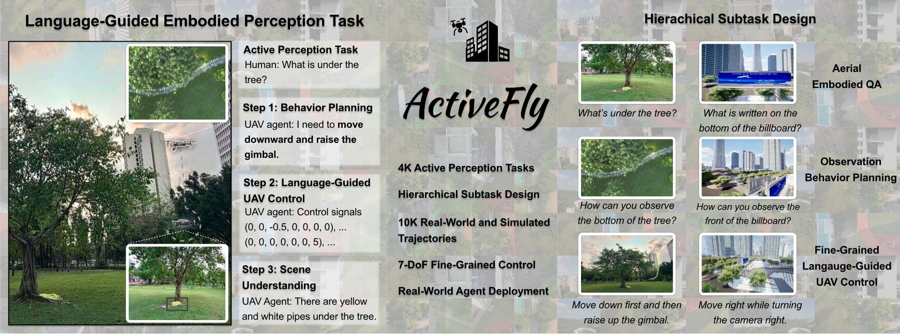
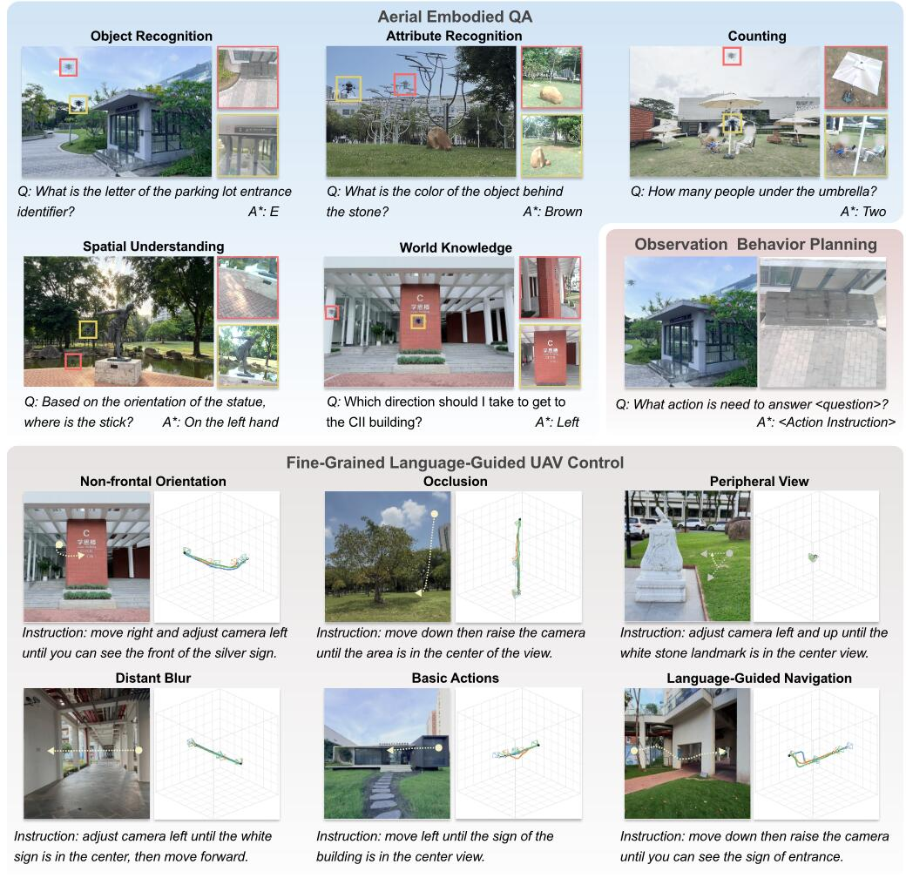
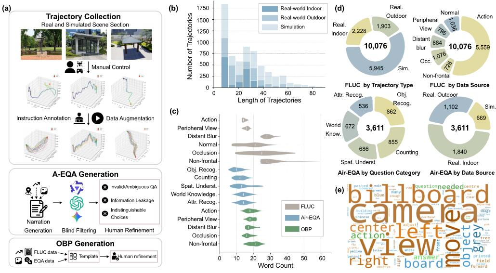

First Unified UAV Benchmark
It bridges high-level embodied question answering and low-level UAV action execution instead of evaluating them as isolated capabilities.
Aligning Embodied Question Answering with Vision-Language-Action for Aerial Embodied Perception
Abstract
ActiveFly-Bench is introduced as a benchmark for connecting cyberspace reasoning and physical-world interaction in UAV embodied perception. It decomposes active perception into Aerial Embodied Question Answering, Observation Behavior Planning, and Fine-grained Language-guided UAV Control, explicitly linking high-level task understanding, behavior planning, and low-level control.
The datasets are collected from real-world and simulated outdoor environments. ActiveFly is further developed as a closed-loop UAV agent that integrates visual-language reasoning with fine-grained control. Experiments with representative VLMs and VLA models show that current agents still struggle with observation planning, viewpoint adjustment, and robust task completion.
Overview
ActiveFly-Bench is built for language-guided UAV active perception, where an agent must reason from a question, plan how to observe, execute fine-grained control, and answer from the gathered visual evidence.
It bridges high-level embodied question answering and low-level UAV action execution instead of evaluating them as isolated capabilities.
Air-EQA, OBP, and FLUC share the same semantic route from question to observation behavior to executable UAV movement.
ActiveFly combines VLM planning with VLA control and is validated on a physical UAV through a ground-drone collaborative system.

Tasks
The benchmark asks whether a UAV can answer an embodied question by deciding where to look and then executing the motion needed to obtain the right viewpoint.
Answer an aerial embodied question after actively collecting relevant observations.
Infer the observation behavior needed to answer the question from the initial view.
Generate fine-grained UAV-body and gimbal actions that reach a task-relevant viewpoint.

Dataset
The benchmark is built from expert trajectories and human-validated QA/planning annotations, keeping the three subtasks aligned at the semantic level.

Demo
The paired benchmark videos compare OpenVLA and Pi-0.5 on matched rollout cases, while the real-world collection demos are shown as standalone UAV videos.
Real-World Demos
These demos are collected from real indoor and outdoor scenes, with two indoor cases and two outdoor cases shown as standalone examples.
Sample
A sample trajectory from the benchmark is shown with its first-person observation video and synchronized UAV motion path. The image sequence in sample/ is encoded at 0.15 seconds per frame.
Move right until you are in front of the blue overhead billboard while adjusting camera left to keep the blue overhead billboard in the centre of the camera. Then move down until you are in front of the blue overhead billboard while adjusting camera up to keep the blue overhead billboard in the centre of the camera.
sample/log.json, synchronized to the image frames.ActiveFly Agent
ActiveFly first uses a VLM to plan the observation behavior, passes that plan to a VLA model for fine-grained UAV action prediction, and then answers the embodied question from sampled observation history.
The VLM predicts how the UAV should move or adjust viewpoint to acquire missing information.
The VLA consumes the observation plan, current observation, and UAV state to predict control actions.
After execution, the VLM answers from a sampled observation history; the paper uses 16 images in practice.